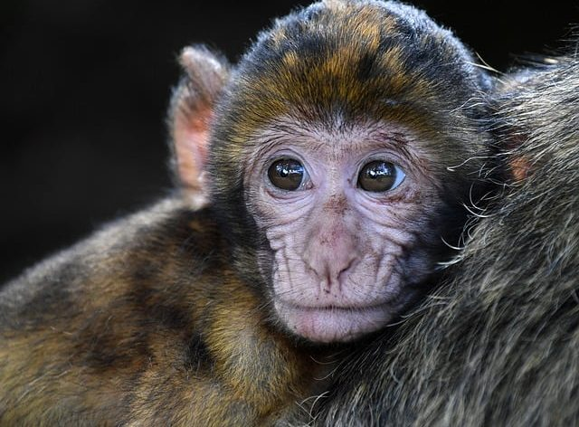

တရုပ်နိင်ငံက သိပ္ပံပညာရှင်တွေဟာ ကလုန်းလုပ်နည်းပညာအသစ်ကို အသုံးပြုပြီး မျောက်ကို အောင်မြင်စွာ ကလုန်းလုပ်နိုင်ပြီဖြစ်ကြောင်း အင်္ဂလန် နိုင်ငံမှာ ထုတ်ဝေတဲ့ New Scientist မဂ္ဂဇင်းမှာ ဖေါ်ပြထားပါတယ်။
သက္ကရဇ် ၂၀၀၀ တုန်းကတည်းက သိပ္ပံပညာရှင်တွေဟာ မျောက်ကို အောင်မြင်စွာ ကလုန်းလုပ်နိုင်ခဲ့ပေမယ့် အဲ့ဒီနည်းပညာဟောင်းနဲ့ဆို အလွန်ဆုံး ၄ ခါထက် ပိုကလုန်းပွားလို့ မရနိုင်ပါဘူး။ ဒါပေမယ့် အခုနည်းပညာအသစ်အရတော့ အကြိမ်ရေ ကြိုက်သလောက် ပွားနိုင်တော့မှာ ဖြစ်ပါတယ်။
မျောက်တွေဟာ မျိုးရီုးဗီဇအရ လူတွေနဲ့ အနီးစပ်ဆုံး တူညီတဲ့ အတွက် ဒီကလုန်းမျောက်တွေကို ကင်ဆာလို၊ အယ်ဇိုင်းမားလို ရောဂါမျိုးတွေ ရအောင်လုပ်ပြီး ရောဂါဖြစ်စဉ်တွေကို အသေးစိတ် လေ့လာနိုင်တော့မှာ ဖြစ်ပါတယ်။
ဒီတွေ ရှိချက်တွေဟာ ကင်ဆာနဲ့ အခြားနာတာရှည်ရောဂါကုသနည်းတွေ ရှာဖွေရာမှာ အထောက်အကူပြုမှာ ဖြစ်တယ်လို့ သိပ္ပံပညာရှင်တွေက ဆိုပါတယ်။ လူကို ကလုန်းလုပ်နိုင်ဖို့လဲ မဝေးတော့ဘူးလို့လဲ သိပ္ပံ ပညာရှင်တွေက ဆိုပါတယ်။
ဒေါ်လီဆိုတဲ့ ကမ္ဘာ့ ပထမဆုံး ကလုန်းသိုးကလေး မွေးဖွားတဲ့ အချိန်ကစလို့ အခုထိ စုစုပေါင်း မျိုးစိတ် ၂၃ စိတ်ကို အောင်မြင်စွာ ကလုန်းလုပ်နိုင်ခဲ့ပါပြီ။
ဒီအထဲမှာ သိုး၊ခွေး၊ကြောင်၊ ကြွက်၊ နဲ့ အခြား မျိုးစိတ်တွေ ပါဝင်ပါတယ်။ ဒါပေမယ့် မျောက်တွေကတော့ ကလုန်းလုပ်ရ ခက်ခဲနေခဲ့ပါတယ်။
ယခင်က မျောက်ကလုန်းမျိုးပွားတွေ အားလုံးဟာ သန္ဓေသားလောင်း ဘဝမှာပဲ သေဆုံးကုန်ကြပါတယ်။ အခုနည်းနဲ့ ပွားတဲ့ မျောက်ကလုန်းတွေကတော့ အရွယ်ရောက်သည်အထိ အောင်အောင်မြင်မြင် အသက်ရှင်နိုင်ကြပါတယ်။
ဒီနည်းကို တရုတ်အမျိုးသား သိပ္ပံ အကယ်ဒမီ၊ ဦးဏှောက်နဲ့ အာရုံကြောသုတေသိ ဌာနက ကျင်ဆန်းနဲ့ အပေါင်းပါသုတေသီများက တီထွင်ခဲ့ကြတာ ဖြစ်ပါတယ်။ ဒီနည်းနဲ့ ပွားလို့အောင်မြင်တဲ့ သန္ဓသားလောင်း ၇၇ ကောင်ကို မျောက်မ ၂၁ ကောင်ရဲ့ သားအိမ်ထဲကို ထည့်သွင်းခဲ့ရာ မှာ ဇွန်ဇွန် နဲ့ ဟွားဟွား ဆိုတဲ့ မျောက် မောင်နှမကို အောင်မြင်စွာ မွေးဖွားပေးနိုင်ခဲ့ပါတယ်။
ကမ္ဘာ့ ပထမဆုံး ဒေါ်လီနဲ့ ယှဉ်မယ်ဆိုရင် ဒေါ်လီကိုရဖို့ သားလောင်း ၂၇၇ ကောင်နဲ့ ကြိုးစားခဲ့ရတာဖြစ်တဲ့အတွက် အောင်မြင်မှု ရာခိုင်နှုန်းလဲ အများကြီး တိုးတက်လာပါတယ်။
ဒီနည်းပညာသစ်ကို အသုံးပြုမယ်ဆိုရင် လူသားကလုန်းမျိုးပွားတွေ ဖြစ်ပေါ်လာဖို့ သိပ်မကြာတော့ဖူးလို့ သိပ္ပံပညာရှင်တွေက ဆိုပါတယ်။ ဒါပေမယ့် လူသားကို ကလုန်းပွားဖို့ ဆိုရင်တော့ အခက်အခဲတွေ အများကြီး ရှိနေပါသေးတယ်။
ပထမဆုံးကတော့ အခုနည်းသစ်နဲ့ ကလုန်းပွားတာဟာ မျောက်သားလောင်းရဲ့ မျိုးရိုးဗီဇက ပွားတာဖြစ်ပြီး အရွယ်ရောက်ပြီးမျောက်က ပွားဖို့ ကြိုးစားမှုတွေကတော့ အခုထိ မအောင်မြင်သေးပါဘူး။ နိုင်ငံတကာ ဥပဒေတွေ အရလဲ လူသားကလုန်းပွးမှုကို တားမြစ်ထားပါသေးတယ်။
တရုတ်ပညာရှင်တွေကတော့ အခုမျောက်ကလုန်းတွေကို ဆေးသုတေသနမှာ အသုံးချဖို့ ရည်ရွယ်တယ်လို့ ဆိုပါတယ်။ ဒီမျောက်ကလုန်းတွေကို အသုံးချပြီး ကင်ဆာနဲ့ အယ်ဇိုင်းမား ရောဂါဖြစ်စဉ်တွေကို အသေးစိတ် လေ့လာနိုင်တော့မှာ ဖြစ်တဲ့အတွက် ကင်ဆာနဲ့ အယ်ဇိုင်းမား ကုထုံးအသစ်တွေ မကြာမီ ပေါ်ထွက်လာနိုင်တော့မှာ ဖြစ်တယ်လို့ ပညာရှင်များက ဆိုကြပါတယ်။
ကလုန်းမျောက်များဖြင့် ကင်ဆာရောဂါကို ကုသနိုင်တော့မည်

February 1, 2018
Other Posts
- လကမ္ဘာမှာ ဝတ်မယ့် အာကာသ ဝတ်စုံ နာဆာထုတ်ဖော်ပြသ
- ကြယ်တစ်စင်းဟာ ဂြိုဟ်အဖြစ် ပြောင်းသွားနိုင် သလား
- မိုးပျံကား Taxi တွေလာပြီနော်
- Black hole အသေးလေးတွေ လမျက်နှာပြင်ကို ဝင်တိုက်ခဲ့တယ်ဟုဆို
- ပြင်မရအောင် ပျက်နေပြီ ဆိုတဲ့ အပြည်ပြည် ဆိုင်ရာ အာကာသ စခန်းကြီး
- အပြည်ပြည်ဆိုင်ရာ အာကာသစခန်းရှိ ရုရှားဆိုယုယာဉ်မှ ဓါတ်ငွေ့ယိုစိမ့်မှု ဖြစ်ပွား
- ထူးဆန်းတဲ့ ဂလက်ဆီ အမွှာစုံတွဲ ပဟေဠိ အဖြေပေါ်ပြီ
- ဂြိုဟ်နှစ်စင်း တိုက်မိတဲ့ဖြစ်စဉ်
- တရုတ်ထက် ဦးအောင် လပေါ်မှာ သတ္တုတူးဖို့ နာဆာ ကြိုးပမ်းနေ
- လူလိုက်ပါသော SpaceX အောင်မြင်စွာ လွှတ်တင်